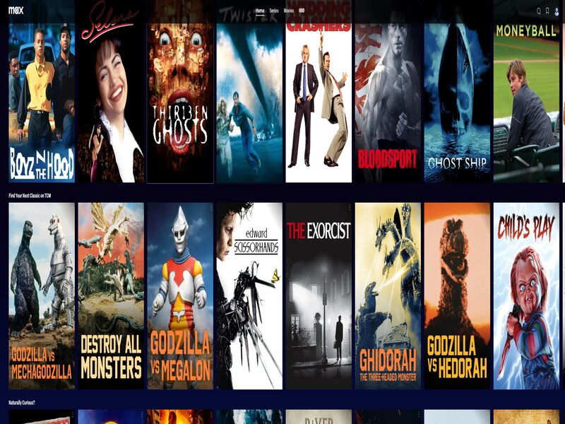
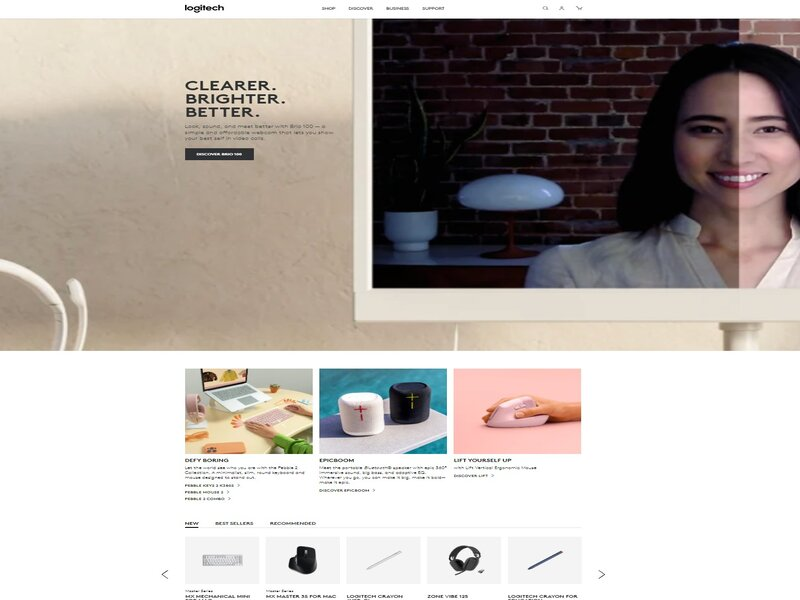
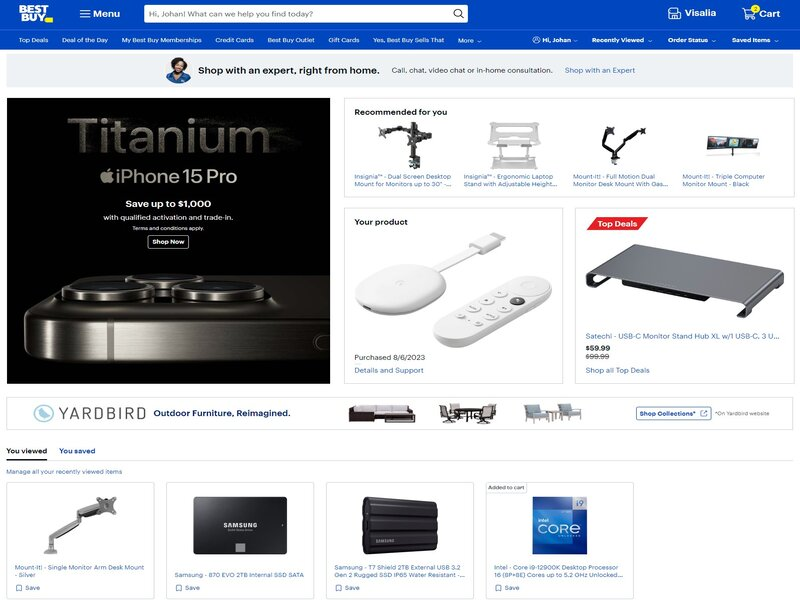

Repetition
MAX
play.max.com The principle of repetition in Web Design is the use of similar or identical elements multiple times throughout the design in the case of Max each one of the movies in display the same size, form and even layout, the navigation bar also repeats itself in every section of the website and if we go further and select a show we can also see how they all display the same way and form.
Alignment
Logitech
When we talk about Alignment there is multiple ways to do it in the case of Logitech or Logi they align their images product and even text at the same level of their brand name and logo.
Contrast
Best Buy
When we think about contrast there is multiple ways to do it, some use big size font next to small one and that is a contrast others use colors and someuse multiple types of contrast all at the same times in the bestbuy website they always have the hottest product display in a big advertisement spot located on the left side in this case is the iphone 15 pro and we can see how from the typography to the color and all the design is complety different from the rest of the website creating contrast with the rest of the page.